Picturebook Reading Lists
Explore Australia, Canada, India, South Africa and more
Browse by theme to find books to share at home, in classrooms or in reading groups. Each entry gives the publication details I could verify and links to publishers, reading guides or UK booksellers where available. Check the retailer’s edition and availability before ordering.

274 reading-list entries
For more recommendations, explore BookTrust’s Bookfinder.
Explore creators in the Authors and Illustrators directories.
Disability
These books explore disabled childhoods, accessibility and participation. The neurodivergence and mental health lists offer related reading.

What Happened to You?
James Catchpole · Karen George
· London: Faber & Faber
A child with one leg wants to play while other children ask about his body.
Link edition: ISBN 9780571358311 · paperback · Faber & Faber · Mar 31, 2021 · Edition record

My City Speaks
Darren Lebeuf · Ashley Barron
· Toronto, Ontario: Kids Can Press
A girl who is visually impaired explores the city through sound, touch and movement.
Link edition: ISBN 9781525304149 · hardcover · Kids Can Press · Sep 07, 2021 · Edition record
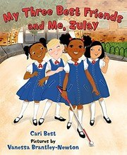
My Three Best Friends and Me, Zulay
Cari Best · Vanessa Brantley-Newton
· New York: Margaret Ferguson Books / Farrar, Straus and Giroux
Zulay prepares to run in her school’s field day.
Link edition: ISBN 9780374388195 · Farrar, Straus and Giroux (BYR) · Jan 13, 2015 · Edition record
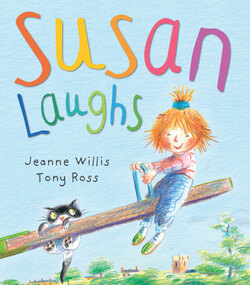
Cover pendingSusan Laughs
Jeanne Willis · Tony Ross
· London: Andersen Press
Everyday scenes introduce Susan before the final image reveals her wheelchair.
Link edition: ISBN 9781842709900 · Andersen Press · 2011 · Edition record

We Move Together
Kelly Fritsch and Anne McGuire · Eduardo Trejos
· Chico, California: AK Press
A story about access, solidarity and finding ways to move together.
Link edition: ISBN 9781849354042 · Hardcover · AK Press · 2021 · Edition record
- Cover pending
You Are Enough: A Book About Inclusion
Margaret O’Hair and Sofia Sanchez · Sofia Cardoso
· New York: Scholastic Inc.
An illustrated celebration of belonging and difference.
Link edition: ISBN 9781338630749 · hardcover · Scholastic Inc. · Mar 02, 2021 · Edition record
- Cover pending
Just Ask! Be Different, Be Brave, Be You
Sonia Sotomayor · Rafael López
· New York: Philomel Books
Children introduce different ways of experiencing and participating in the world.
Link edition: ISBN 9780525514121 · Hardcover · Edition record
- Cover pending
Amazing
Steve Antony
· London: Hodder Children’s Books
A wheelchair user and his pet dragon have adventures together in a story where disability is part of everyday life.
- Cover pending
We’re All Wonders
R. J. Palacio
· New York: Alfred A. Knopf
Auggie narrates what it feels like to be stared at and invites readers to consider how they see others.
Link edition: ISBN 9781524769543 · paperback · Random House · Mar 28, 2017 · Edition record

I Am Not a Label: 34 Disabled Artists, Thinkers, Athletes and Activists from Past and Present
Cerrie Burnell · Lauren Mark Baldo
· Wide Eyed Editions
An illustrated collection that gives readers several different starting points for exploring disabled lives and achievements.
Link edition: ISBN 9780711247451 · hardcover · Wide Eyed Editions · Jul 07, 2020 · Edition record

The Black Book of Colors
Menena Cottin · Rosana Faría · Elisa Amado (translator)
· Toronto: Groundwood Books
Raised images and braille invite readers to explore how colour can be described through senses other than sight.
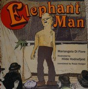
Elephant Man
Mariangela Di Fiore · Hilde Hodnefjeld · Rosie Hedger (translator)
2015 · Annick Press
English translation of Elefantmannen, a personal favourite.
English edition details · My article on Elefantmannen
A Sky-Blue Bench
Bahram Rahman; illustrated by Peggy Collins
2021 · Pajama Press · ISBN 9781772782226
In Afghanistan, Aria sets out to make a bench that will let her sit comfortably in school with her prosthetic leg.
Edition and cover detailsLink edition: ISBN 9781772782226 · Pajama Press · 2021 · Edition record
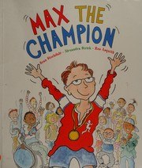
Max the Champion
Sean Stockdale and Alex Strick; illustrated by Ros Asquith
Frances Lincoln Children’s Books · ISBN 9781847805195
Max imagines sporting glory throughout an ordinary school day. Illustrations show disabled and non-disabled children playing together.
Edition and cover detailsLink edition: ISBN 9781847805195 · Quarto Publishing Group UK · 2014 · Edition record
- Cover pending
You Can!
Alexandra Strick · Steve Antony
2021 · Otter-Barry Books
Follow the same children across life stages and look for the visual stories that run alongside the text.
Link edition: ISBN 9781913074609 · Otter-Barry Books · 2021 · Edition record
- Cover pending
We Can!: Make a Difference
Alexandra Strick · Steve Antony
2024 · Otter-Barry Books · ISBN 9781915659309
A child-led festival makes room for accessible play and collective action.
Link edition: ISBN 9781915659309 · Otter-Barry Books · 2024 · Edition record
- Cover pending
Sam’s Super Seats
Keah Brown · Sharee Miller
2022 · Kokila
Sam’s shopping trip with friends asks who can comfortably use public spaces. It makes room for fatigue, rest and fun.
Link edition: ISBN 9780593323892 · Penguin Young Readers Group · 2022 · Edition record
- Cover pending
You’re SO Amazing!
James Catchpole and Lucy Catchpole · Karen George
2023 · Faber
Joe questions why everyday play attracts praise simply because he is disabled. Read alongside What Happened to You?
Link edition: ISBN 9780571376001 · Faber & Faber, Limited · 2023 · Edition record
 Cover pending
Cover pendingThe Blind Fairy: A Tale
Brigitte Schär · illustrated by Julia Gukova
1998 · North-South Books · ISBN 1558589708
An illustrated fairy tale in which a fairy regains her sight. Read critically alongside contemporary books about blindness to discuss how the story connects sight with power.
Neurodivergence
Read about autistic and ADHD experiences, different ways of communicating and learning, and how sensory environments shape everyday life. Some books depict sensory experiences without naming a diagnosis.

A Friend for Henry
Jenn Bailey · Mika Song
· San Francisco, California: Chronicle Books
A classroom friendship told from the perspective of an autistic child.
Link edition: ISBN 9781452167916 · hardcover · Chronicle Books, Chronicle Books LLC · Feb 26, 2019 · Edition record

A Day with No Words
Tiffany Hammond · Kate Cosgrove
· New Egypt, New Jersey: Wheat Penny Press
A family’s day out centres communication through an AAC device.
Link edition: ISBN 9781736949795 · Wheat Penny Press · 2024 · Edition record

My Brother Charlie
Holly Robinson Peete and Ryan Elizabeth Peete · Shane W. Evans
· New York: Scholastic Press
A sister describes her relationship with her autistic twin brother.
- Cover pending
Too Sticky! Sensory Issues with Autism
Jen Malia · Joanne Lew-Vriethoff
· Albert Whitman & Company
A child navigates the sensory demands of a classroom slime experiment.

This Beach Is Loud!
Samantha Cotterill
· New York: Dial Books for Young Readers
A beach trip shows how noise and other sensory experiences can become overwhelming.
Link edition: ISBN 9781789561364 · Trigger · 2020 · Edition record
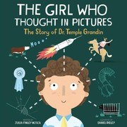
The Girl Who Thought in Pictures: The Story of Dr. Temple Grandin
Julia Finley Mosca · Daniel Rieley
· Seattle, Washington: The Innovation Press
An illustrated biography introducing Temple Grandin and her visual way of thinking.
Link edition: ISBN 9781943147304 · Innovation Press, The, The Innovation Press · 2017 · Edition record
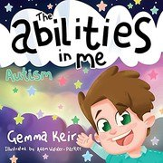
The Abilities in Me: Autism
Gemma Keir · Adam Walker-Parker
· Independently published
A starting point for talking about autism and individual differences.
Link edition: ISBN 9781095358221 · paperback · Independently published · May 12, 2019 · Edition record
 Cover pending
Cover pendingA Walk in the Words
Hudson Talbott
2021 · Nancy Paulsen Books · ISBN 9780399548710
An autobiographical picturebook that uses changing typography to convey the experience of learning to read at one’s own pace.
Edition and cover detailsLink edition: ISBN 9780399548710 · Penguin Young Readers Group · 2021 · Edition record
- Cover pending
Pablo and the Noisy Party
Andrew Brenner and Sumita Majumdar
2020 · Ladybird
Pablo and his imagined companions find ways to respond when a party becomes too loud.
Link edition: ISBN 9780241415740 · Paperback · Edition record
- Cover pending
Gina Kaminski Saves the Wolf
Craig Barr-Green · Francis Martin
2023 · Little Tiger
An autistic child rewrites Little Red Riding Hood, using the picturebook to question who decides how a familiar tale ends.
- Cover pending
Loud!
Rose Robbins
2021 · Scallywag Press
Abigail’s restlessness takes on a new meaning when her teacher notices her talent for making music. BookTrust identifies ADHD as implied.
Link edition: ISBN 9781912650569 · Scallywag Books · 2021 · Edition record
- Cover pending
My Little Drummer
Sian Radford · Gwen Millward
2026
Rhyming language gives readers a way to hear and discuss one child’s everyday experience of ADHD.
Link edition: ISBN 9780008762162 · Paperback · Edition record
 Cover pending
Cover pendingToo Much! An Overwhelming Day
Jolene Gutiérrez · Angel Chang
· New York · Abrams Appleseed · ISBN 9781419764264
Colour and rhythm convey the accumulation of sensory demands and the experience of finding a quieter space. A starting point for asking children what helps them feel comfortable.
Link edition: ISBN 9781419764264 · Hardcover · Edition record
Mental Health
These books give children and adults ways to talk about mental health, including depression and bipolar disorder. Read together when the subject is close to a child’s own experience.
 Cover pending
Cover pendingUp and Down Mum
Child’s Play; illustrated by Summer Macon
2019 · Child’s Play · ISBN 9781786283399
A child describes everyday life with a mother who has bipolar disorder. The roller-coaster imagery gives readers a starting point for discussion.
Edition and cover detailsLink edition: ISBN 9781786283399 · Child's Play International Limited · 2020 · Edition record
- Cover pending
The Princess and the Fog: A Story for Children with Depression
Anthony Lloyd Jones
2015 · Jessica Kingsley Publishers · ISBN 9781849056557
A fog interrupts a young princess’s everyday life. Read together to talk about persistent low mood, asking for help and what supportive adults can do. The publisher recommends ages 5–7.
Link edition: ISBN 9781849056557 · Kingsley Publishers, Jessica · 2015 · Edition record
Deaf and hard-of-hearing experiences
Picturebooks featuring deaf and hard-of-hearing characters, Deaf history and sign language. Signed languages vary by country, so check which language an edition depicts.

Can Bears Ski?
Raymond Antrobus · Polly Dunbar
· Somerville, Massachusetts: Candlewick Press
A young bear makes sense of sounds, hearing loss and new ways to communicate.

Moses Goes to a Concert
Isaac Millman
· New York: Farrar, Straus and Giroux
A Deaf class meets a Deaf percussionist. The book includes American Sign Language (ASL).
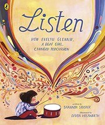
Listen: How Evelyn Glennie, a Deaf Girl, Changed Percussion
Shannon Stocker · Devon Holzwarth
· New York: Dial Books for Young Readers
A picturebook biography of Scottish percussionist Evelyn Glennie.
- Cover pending
The Sound of All Things
Myron Uhlberg · Ted Papoulas
· Atlanta, Georgia: Peachtree Publishers
A hearing child and his Deaf parents share an outing at Coney Island.
Link edition: ISBN 9781561458332 · Peachtree Publishing Company · Mar 01, 2016 · Edition record

The William Hoy Story: How a Deaf Baseball Player Changed the Game
Nancy Churnin · Jez Tuya
· Albert Whitman & Company
A picturebook biography of the Deaf baseball player William Hoy.
- Cover pending
Freddie and the Fairy
Julia Donaldson · Karen George
· London: Macmillan Children’s Books
A wish-granting fairy who is hard of hearing prompts Freddie to rethink how he communicates.

Dad, Jackie, and Me
Myron Uhlberg · Colin Bootman
· Atlanta, Georgia: Peachtree Publishers
A hearing boy and his Deaf father bond over baseball and Jackie Robinson.
Link edition: ISBN 9781561455317 · paperback · Peachtree Publishing Company · Feb 01, 2010 · Edition record

The Printer
Myron Uhlberg · Henri Sørensen
· Atlanta, Georgia: Peachtree Publishers
A Deaf printer uses sign to warn colleagues about a fire.
Link edition: ISBN 9781561452217 · Peachtree · 2003 · Edition record
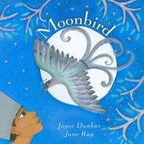
Moonbird
Joyce Dunbar · Jane Ray
· London: Doubleday
A deaf prince encounters a bird that helps him and those around him discover different ways to communicate.
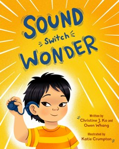
Sound Switch Wonder
Christine J. Ko and Owen Whang · Katie Crumpton
· West Margin Press
A deaf child and his mother share what listening with cochlear implants can feel like.
Link edition: ISBN 9781513141459 · Turner Publishing Company · 2024 · Edition record
 Cover pending
Cover pendingDachy’s Deaf
Jack Hughes
· London: Franklin Watts
A young dinosaur wears a hearing aid and has an adventure with friends.
Link edition: ISBN 9780750278010 · paperback · Wayland (Publishers) Ltd · Jul 11, 2013 · Edition record

Moses Goes to School
Isaac Millman
· New York: Farrar, Straus and Giroux
Moses’s school day unfolds through pictures, written English and examples of American Sign Language.
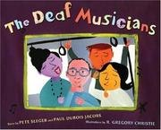
The Deaf Musicians
Pete Seeger and Paul DuBois Jacobs · R. Gregory Christie
· New York: G. P. Putnam’s Sons
A jazz pianist who loses his hearing finds new collaborators through a sign language class.
 Cover pending
Cover pendingMy First Signs
Illustrated by Annie Kubler
Child’s Play · 2004 · British Sign Language edition · ISBN 9781904550044
A board book featuring everyday BSL signs with drawings of babies using them in context.
Edition and cover detailsLink edition: ISBN 9781904550044 · Board book · Edition record
 Cover pending
Cover pendingEl Deafo
Cece Bell
ABRAMS · paperback (2014), 248 pages · ISBN 9781419712173
For inclusive reading conversations: a graphic memoir of hearing loss, school and friendship. Discuss the barriers in the classroom and the choices adults and peers can make. This is the original paperback, rather than the expanded Superpowered Edition.
Link edition: ISBN 9781419712173 · Harry N. Abrams · Sep 02, 2014 · Edition record
Chinese diasporic childhoods and cultural identity
 Cover pending
Cover pendingEyes That Kiss in the Corners
Joanna Ho · Dung Ho
· New York: Harper
A girl sees a family resemblance across generations and learns to value it.
Link edition: ISBN 9780062915627 · HarperCollins Publishers Limited · 2021 · Edition record
Amy Wu and the Perfect Bao
Kat Zhang · Charlene Chua
· New York: Aladdin
Making bao with family gives Amy room to learn by experimenting.
 Cover pending
Cover pendingDim Sum for Everyone!
Grace Lin
· New York: Alfred A. Knopf
A family shares small dishes at a dim sum restaurant, with details that invite children to talk about food and family routines.
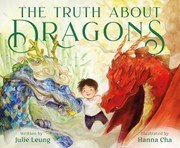
The Truth About Dragons
Julie Leung · Hanna Cha
· New York: Henry Holt and Company
Two grandmothers tell different dragon stories, both part of a child’s inheritance.
Link edition: ISBN 9781250820587 · Hardcover · Henry Holt & Company · 2023 · Edition record

The Rice in the Pot Goes Round and Round
Wendy Wan-Long Shang · Lorian Tu
· New York: Orchard Books
A cumulative rhyme follows a Chinese American family gathering around the dinner table.
Link edition: ISBN 9781338621198 · hardcover · Orchard Books · Apr 20, 2021 · Edition record
 Cover pending
Cover pendingA Big Mooncake for Little Star
Grace Lin
· New York: Little, Brown and Company
A playful story about the phases of the moon, inspired by the Mid-Autumn Festival.
Link edition: ISBN 9780316404488 · Little Brown & Company, Little, Brown and Company · 2018 · Edition record
- Cover pending
Chinatown
William Low
· New York: Henry Holt and Company
A child accompanies his grandmother through a neighbourhood shaped by Chinese migration.
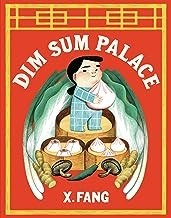
Dim Sum Palace
X. Fang
· London: Pushkin Children’s Books
A fantastical visit to a dim sum palace centres food, family and imagination.
Link edition: ISBN 9781782694564 · Pushkin Press, Limited · 2024 · Edition record

Goldy Luck and the Three Pandas
Natasha Yim · Grace Zong
· Watertown, Massachusetts: Charlesbridge
A Lunar New Year retelling of Goldilocks that makes room for repair and hospitality.
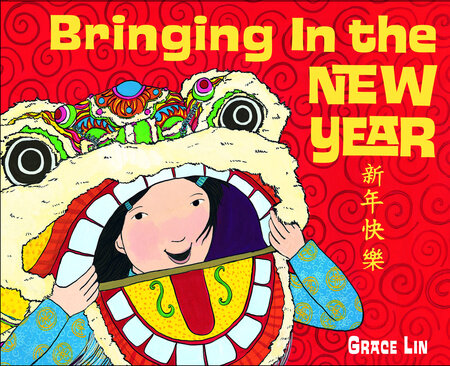
Cover pendingBringing In the New Year
Grace Lin
· New York: Alfred A. Knopf
A Chinese American family prepares for Lunar New Year through shared household traditions.
Link edition: ISBN 9780375837456 · Hardcover · Knopf Books for Young Readers · January 8, 2008 · Edition record
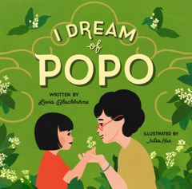
I Dream of Popo
Livia Blackburne · Julia Kuo
· New York: Roaring Brook Press
A child and her grandmother sustain a bond across the distance between Taiwan and the United States.
Link edition: ISBN 9781250249319 · hardcover · Roaring Brook Press · Jan 05, 2021 · Edition record

Year of the Cat
Richard Ho · Jocelyn Li Langrand
· New York: Greenwillow Books
A retelling of the zodiac race that asks what happened to the cat.
Link edition: ISBN 9780062976826 · hardcover · Greenwillow Books · Nov 01, 2022 · Edition record
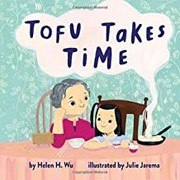
Tofu Takes Time
Helen H. Wu · Julie Jarema
· Minneapolis, Minnesota: Beaming Books
A girl learns patience as she and her grandmother make tofu together.
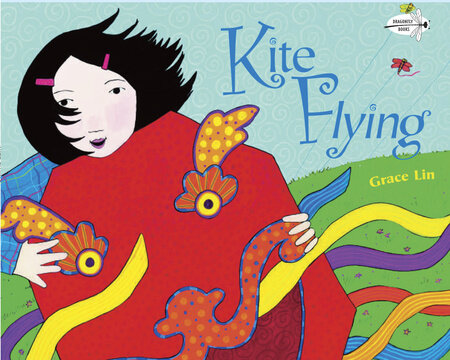
Cover pendingKite Flying
Grace Lin
· New York: Alfred A. Knopf
A family makes and flies a dragon kite together.
Link edition: ISBN 9780553112542 · Paperback · Dragonfly Books · May 11, 2004 · Edition record

Two New Years
Richard Ho · Lynn Scurfield
· San Francisco, California: Chronicle Books
A Chinese Jewish family celebrates Lunar New Year and Rosh Hashanah.
Link edition: ISBN 9781797212814 · Chronicle Books LLC · 2023 · Edition record

Grandpa Grumps
Katrina Moore · Xindi Yan
· Little Bee Books
Daisy tries to connect with her visiting grandfather across a language barrier.

My Day with Gong Gong
Sennah Yee · Elaine Chen
· Annick Press
A trip through Chinatown gives a child and her grandfather new ways to understand one another.
Link edition: ISBN 9781773214290 · Annick Press, Limited, Annick Press · 2020 · Edition record
Gender and sexuality
Discuss which expectations the stories challenge and what possibilities they offer their characters.

Julián Is a Mermaid
Jessica Love
· Somerville, Massachusetts: Candlewick Press
Julián explores dress and self-expression with the support of his abuela.

When Aidan Became a Brother
Kyle Lukoff · Kaylani Juanita
· New York: Lee & Low Books
A transgender boy thinks about how to welcome a new sibling.

And Tango Makes Three
Justin Richardson and Peter Parnell · Henry Cole
· New York: Simon & Schuster Books for Young Readers
Two male penguins raise a chick together in a story based on real penguins.

Red: A Crayon’s Story
Michael Hall
· New York: Greenwillow Books
A crayon labelled red discovers that it can draw in blue.

Prince & Knight
Daniel Haack · Stevie Lewis
· New York: Little Bee Books
A fairy-tale romance between a prince and a knight.
Link edition: ISBN 9781787418257 · Paperback · Templar Publishing · 2020 · Edition record
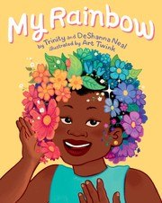
My Rainbow
DeShanna Neal and Trinity Neal · Art Twink
· New York: Kokila
A mother makes a wig that reflects her transgender daughter’s sense of herself.
Link edition: ISBN 9781984814609 · Hardcover · Kokila · 2020 · Edition record
 Cover pending
Cover pendingCalvin
JR Ford and Vanessa Ford · Kayla Harren
· New York: G. P. Putnam’s Sons
Calvin prepares to tell his family and school that he is a boy.
Link edition: ISBN 9780593108673 · hardcover · G.P. Putnam's Sons Books for Young Readers · 2021-11-09 · Edition record
- Cover pending
Uncle Bobby’s Wedding
Sarah S. Brannen · Lucia Soto
· London: Hodder Children’s Books
A young girl wonders what her uncle’s marriage will mean for their relationship.

The Boy & the Bindi
Vivek Shraya · Rajni Perera
· Vancouver, British Columbia: Arsenal Pulp Press
A boy explores his curiosity about his mother’s bindi and what it means to wear one.
Link edition: ISBN 9781551526683 · Arsenal Pulp Press · 2016 · Edition record
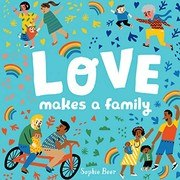
Love Makes a Family
Sophie Beer
· New York: Dial Books for Young Readers
A board book showing different families through everyday moments of care.

Bathe the Cat
Alice B. McGinty · David Roberts
· San Francisco, California: Chronicle Books
A lively comedy about a family with two dads and a cat intent on avoiding bath time.
Link edition: ISBN 9781452142708 · Chronicle Books LLC · 2021 · Edition record
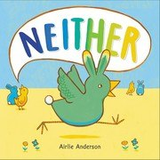
Neither
Airlie Anderson
· New York and Boston: Little, Brown and Company
An imaginative story about belonging beyond a world organised around two categories.
Link edition: ISBN 9780316547697 · Hardcover · Little, Brown Books for Young Readers · 2018 · Edition record
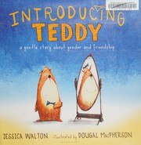
Introducing Teddy: A Gentle Story About Gender and Friendship
Jessica Walton · Dougal MacPherson
· London: Bloomsbury
A teddy bear shares her gender identity with a friend.
Link edition: ISBN 9781408877623 · paperback · imusti, Bloomsbury Publishing PLC · Jun 02, 2016 · Edition record
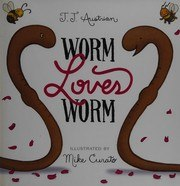
Worm Loves Worm
J. J. Austrian · Mike Curato
· New York: Balzer + Bray
Two worms plan a wedding and question the roles their friends expect them to play.
Link edition: ISBN 9780062386335 · 2016 · Edition record

Pink Is for Boys
Robb Pearlman · Eda Kaban
· Philadelphia, Pennsylvania: Running Press Kids
Colour offers a simple way into a conversation about gender stereotypes.
Link edition: ISBN 9780762475520 · Board Book · Running Press Kids · May 4, 2021 · Edition record
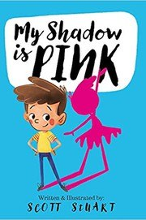
My Shadow Is Pink
Scott Stuart
· Larrikin House
A child’s shadow becomes a visual way to explore gender expression and family support.
Link edition: ISBN 9780648728764 · Paperback · Larrikin House · 2020 · Edition record
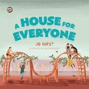
A House for Everyone: A Story to Help Children Learn about Gender Identity and Gender Expression
Jo Hirst · Naomi Bardoff
· London: Jessica Kingsley Publishers
Children build a playhouse together and introduce different ways of expressing who they are.
Link edition: ISBN 9781785924484 · hardcover · Jessica Kingsley Publishers · May 21, 2018 · Edition record
- Cover pending
William’s Doll
Charlotte Zolotow · William Pène du Bois

The Paper Bag Princess
Robert Munsch · Michael Martchenko

Me and My Dysphoria Monster
Laura Kate Dale; illustrated by Hui Qing Ang
2022 · Jessica Kingsley Publishers · ISBN 9781839970931
Uses a monster as a visual metaphor to help young readers talk about gender dysphoria and the support a child can receive.
Edition and cover details
Mommy, Mama, and Me
Lesléa Newman · Carol Thompson
2009 · Tricycle Press · ISBN 9781582462639
A toddler spends the day with two mums in a rhyming board book.
Link edition: ISBN 9781582462639 · Board Book · Tricycle Press · 2009 · Edition record

Daddy, Papa, and Me
Lesléa Newman · Carol Thompson
2009 · Tricycle Press · ISBN 9781582462622
Rhythmic words and images follow a toddler and two dads through everyday play and care.
Link edition: ISBN 9781582462622 · Board Book · Tricycle Press · 2009 · Edition record
Grief, loss and remembrance
Compare what an object, a shared activity or an illustration can hold on to after a loss.
 Cover pending
Cover pendingMichael Rosen’s Sad Book
Michael Rosen · Quentin Blake
· London: Walker Books
Words and pictures make space for grief that can persist and change over time.
Link edition: ISBN 9781406317848 · paperback · imusti, CandlewickPress(MA) · Feb 28, 2005 · Edition record
 Cover pending
Cover pendingGrandad’s Island
Benji Davies
· London: Simon & Schuster Children’s Books
An imaginative journey gives a child a way to say goodbye.
Link edition: ISBN 9781471119958 · paperback · Simon & Schuster Children's UK, imusti · Jul 02, 2015 · Edition record

The Heart and the Bottle
Oliver Jeffers
· London: HarperCollins Children’s Books
A visual metaphor for withdrawing after loss and gradually opening up again.
Link edition: ISBN 9780007182343 · HarperCollins Publishers Limited · 2010 · Edition record
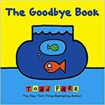
The Goodbye Book
Todd Parr
· New York: Little, Brown and Company
A small fish experiences the feelings that can follow a goodbye.

The Memory Box: A Book About Grief
Joanna Rowland · Thea Baker
· Minneapolis, Minnesota: Sparkhouse Family
A child finds a tangible way to keep memories close.
Link edition: ISBN 9781506426723 · 2017 · Edition record
- Cover pending
Badger’s Parting Gifts
Susan Varley
· London: Andersen Press
Friends remember Badger through the skills and experiences he shared with them.

Always and Forever
Alan Durant · Debi Gliori
· London: Picture Corgi
Animal friends mourn Fox and find ways to remember their life together.
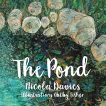
The Pond
Nicola Davies · Cathy Fisher
· Graffeg
A family builds a pond after the death of a child’s father.
Link edition: ISBN 9781912050703 · 2017 · Edition record
- Cover pending
Ocean Meets Sky
Terry Fan and Eric Fan
· New York: Simon & Schuster Books for Young Readers
A boy builds a boat to remember the grandfather who told him stories.
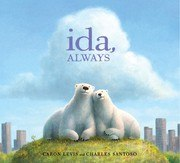
Ida, Always
Caron Levis · Charles Santoso
· New York: Atheneum Books for Young Readers
Two polar bears face illness and death, with attention to the friendship that continues through memory.
Link edition: ISBN 9781481426404 · 2016 · Edition record

Goodbye Mog
Judith Kerr
· London: Collins
A family says goodbye to an old cat as a new kitten arrives.
- Cover pending
Cry, Heart, But Never Break
Glenn Ringtved · Charlotte Pardi
· New York: Enchanted Lion Books
A fable in which Death helps children think about their grandmother’s approaching death.
Link edition: ISBN 9781592701872 · Enchanted Lion Books · 2016 · Edition record
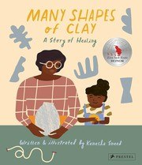
Many Shapes of Clay: A Story of Healing
Kenesha Sneed
· Munich, London and New York: Prestel
A child works with clay while learning how to live with loss.
Link edition: ISBN 9783791374680 · Prestel Publishing · 2021 · Edition record
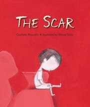
The Scar
Charlotte Moundlic · Olivier Tallec
· Somerville, Massachusetts: Candlewick Press
A boy tries to hold on to memories of his mother after her death.

Missing Mummy
Rebecca Cobb
· London: Macmillan Children’s Books
A child experiences the confusion and sadness that follow the death of a parent.
Link edition: ISBN 9780230749511 · paperback · MacMillan Children's Books · Apr 01, 2012 · Edition record

The Invisible String
Patrice Karst · Joanne Lew-Vriethoff
· Little, Brown Books for Young Readers
An invisible string gives children a metaphor for staying connected to loved ones across separation and loss.
Link edition: ISBN 9780316486231 · paperback · Little, Brown Books for Young Readers · Oct 30, 2018 · Edition record
 Cover pending
Cover pendingThe Rabbit Listened
Cori Doerrfeld
· New York: Dial Books
When something Taylor has made falls apart, a quiet companion offers a way to think about listening after loss or disappointment.
Link edition: ISBN 9780735229358 · Hardcover · Dial Books for Young Readers · 2018 · Edition record
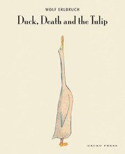
Duck, Death and the Tulip
Wolf Erlbruch
Link edition: ISBN 9781877467172 · Gecko Press · 2009 · Edition record
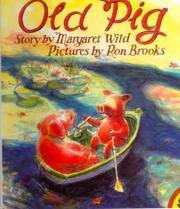
Old Pig
Margaret Wild · Ron Brooks

The Memory Tree
Britta Teckentrup
2014 · Orchard Books · ISBN 9781408326343
Fox’s friends share memories of him. As their stories accumulate, a tree grows in the clearing. The story uses sleep as a metaphor for death, which may need explaining to young readers.
Link edition: ISBN 9781408326343 · Hachette Children's Group · 2014 · Edition record

Mum’s Jumper
Jayde Perkin
2019 · Book Island · ISBN 9781911496137
After her mum dies, a girl finds comfort in wearing her red jumper. Look at how the palette shifts as the jumper changes meaning. About parental death, for shared reading from around age five.
Link edition: ISBN 9781911496137 · Book Island Limited · 2019 · Edition record
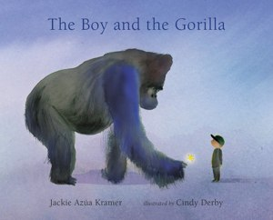
The Boy and the Gorilla
Jackie Azúa Kramer · Cindy Derby
2020 · Walker Books · ISBN 9781406395549
A quiet conversation with a gorilla helps a boy ask the questions he has been holding back since his mother’s death. The dialogue leaves space for silences in a shared reading.
Link edition: ISBN 9781406395549 · Walker Books, Limited · 2020 · Edition record
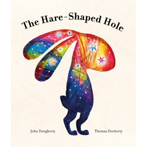
The Hare-Shaped Hole
John Dougherty · Thomas Docherty
2023 · Frances Lincoln Children’s Books · ISBN 9780711276055
A turtle keeps seeing the space where his friend ought to be. Rhyme and negative space make this accessible for an early-primary conversation about the death of a friend.
Link edition: ISBN 9780711276055 · Quarto Publishing Group UK · 2023 · Edition record

The Phone Booth in Mr. Hirota’s Garden
Heather Smith · Rachel Wada
2019 · Orca Book Publishers · ISBN 9781459821033
After a tsunami, a disconnected phone gives villagers somewhere to speak to the people they have lost. About a parent’s death and collective bereavement; preview for younger readers.
Link edition: ISBN 9781459821033 · Orca Book Publishers · 2019 · Edition record
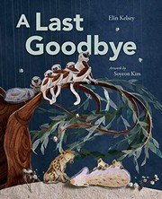
A Last Goodbye
Elin Kelsey · Soyeon Kim
2020 · Owlkids Books · ISBN 9781771473644
Mixed-media scenes invite readers to consider how different animals respond to death. Useful for primary-age readers approaching bereavement through illustrated nonfiction.
- Cover pending
Always Remember
Cece Meng · Jago
· Philomel Books · ISBN 9780399168093
A community of sea creatures remembers Old Turtle through the acts of care that each one experienced. Ages 3–7. Discuss the death of a friend with an adult when appropriate.
- Cover pending
Out to Sea
Helen Kellock
· Thames & Hudson · ISBN 9780500660140
After her grandmother dies, Lara is carried out to sea by her tears. The shifting scale of the water gives visible form to grief. Consider shared reading for children affected by bereavement.
Link edition: ISBN 9780500660140 · Thames & Hudson, Limited · 2022 · Edition record
 Cover pending
Cover pendingThe Tenth Good Thing About Barney
Judith Viorst · Erik Blegvad
· Atheneum Books for Young Readers · ISBN 9780689206887
A boy trying to name ten good things about his cat finds a final thought in the garden. Best read with room to talk about pet death and burial.
 Cover pending
Cover pendingDeath in a Nut
Eric Maddern · Paul Hess
· London · Frances Lincoln · ISBN 184507081X
A traditional tale asks what happens when a boy traps Death to save his mother. Read together to discuss personified death and the story’s ending.

Retellings and intertextuality
Which stories do readers need to recognise, and how does each book reward readers who recognise them?
- Cover pending
Each Peach Pear Plum
Janet and Allan Ahlberg
- Cover pending
The Jolly Postman or Other People’s Letters
Janet and Allan Ahlberg
Link edition: ISBN 9780670886241 · Hardback · Edition record

The Stinky Cheese Man and Other Fairly Stupid Tales
Jon Scieszka · Lane Smith

After the Fall: How Humpty Dumpty Got Back Up Again
Dan Santat
Cultural identity and anti-racism
Consider whose point of view shapes the story and who gets to define what belonging means.
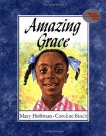
Amazing Grace
Mary Hoffman · Caroline Binch

Baseball Saved Us
Ken Mochizuki · Dom Lee
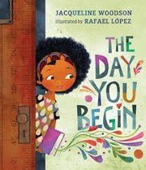
The Day You Begin
Jacqueline Woodson · Rafael López
Link edition: ISBN 9780399246531 · Nancy Paulsen Books · 2018 · Edition record
- Cover pending
The Proudest Blue: A Story of Hijab and Family
Ibtihaj Muhammad with S. K. Ali · Hatem Aly
Link edition: ISBN 9781783449729 · paperback · Andersen Press · 2020 · Edition record
Migration, refuge and belonging
Compare how images and words handle departure, unfamiliar places and the task of making a home.

The Arrival
Shaun Tan
Link edition: ISBN 9780734415868 · paperback · Hodder Childrens Books · Aug 24, 2014 · Edition record

The Colour of Home
Mary Hoffman · Karin Littlewood

The Journey
Francesca Sanna

My Name Is Not Refugee
Kate Milner
Link edition: ISBN 9781911370062 · Barrington Stoke, Limited · 2016 · Edition record
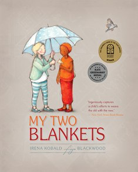
My Two Blankets
Irena Kobald; illustrated by Freya Blackwood
2014 · Hardie Grant Egmont · ISBN 9781760501419 (publisher-listed edition)
A child who has moved to a new country imagines familiar words as a blanket and begins weaving another as a friendship grows.
Edition details
Lubna and Pebble
Wendy Meddour; illustrated by Daniel Egnéus
2019 · Oxford University Press · ISBN 9780192767257 (paperback)
A familiar pebble comforts Lubna in a refugee camp. When another child arrives, she weighs what it would mean to give it away.
Edition details
The Suitcase
Chris Naylor-Ballesteros
2019 · Nosy Crow
An exhausted newcomer arrives with a suitcase. The other animals’ decision to open it invites discussion about trust and welcome.
Edition detailsLink edition: ISBN 9781788004473 · hardcover · Nosy Crow · May 02, 2019 · Edition record

A Different Pond
Bao Phi; illustrated by Thi Bui
2017 · Capstone Young Readers · ISBN 9781623708030
A father and son fish before dawn in Minneapolis. Their conversation connects the family’s present routines with memories of Vietnam.
Edition detailsLink edition: ISBN 9781623708030 · Hardcover · Picture Window Books, a Capstone imprint · 2017 · Edition record

The Paper Boat: A Refugee Story
Thao Lam
2020 · Owlkids Books · ISBN 9781771473637
Wordless collage follows a family’s flight from Vietnam alongside a journey made by ants. Discuss war and forced flight in context.
Edition details
The Name Jar
Yangsook Choi
2001 · Alfred A. Knopf · ISBN 9780375806131 (hardback)
After moving from Korea to the United States, Unhei considers choosing a new name. The story opens up questions about pronunciation, friendship and belonging.
Edition details
Stepping Stones: A Refugee Family’s Journey
Margriet Ruurs; illustrated by Nizar Ali Badr
2016 · Orca Book Publishers · ISBN 9781459814905
Arabic and English text accompanies stone arrangements that trace a Syrian family’s flight. Read together when discussing war and displacement with younger readers.
Edition detailsLink edition: ISBN 9781459814905 · hardcover · Orca Book Publishers · 2017 · Edition record

The Little Refugee
Anh Do and Suzanne Do; illustrated by Bruce Whatley
2011 · Allen & Unwin · ISBN 9781742378329
An autobiographical account of a family’s voyage from Vietnam and a child’s first years in Australia. Includes a perilous sea crossing.
Edition detailsLink edition: ISBN 9781742378329 · Allen & Unwin · 2011 · Edition record

Where Will I Live?
Rosemary McCarney
2017 · Second Story Press · ISBN 9781772600285
Photographs and brief questions invite readers to consider what home means to children displaced by conflict. Use with context about the photographs and forced migration.
Edition detailsLink edition: ISBN 9781772600285 · Second Story Press · Apr 04, 2017 · Edition record
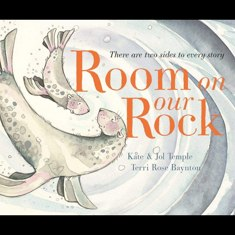
Room on Our Rock
Kate and Jol Temple; illustrated by Terri Rose Baynton
Scholastic Press
Read the same text from front to back and back to front to see how the order of the lines changes a story about turning newcomers away.
Edition details
Granny Came Here on the Empire Windrush
Patrice Lawrence · Camilla Sucre
2022 · Nosy Crow · ISBN 9781839942310
Objects from Granny’s suitcase open up a family history of migration from Trinidad to England. The story touches on racism and belonging.
Link edition: ISBN 9781839942310 · Nosy Crow · 2022 · Edition record
War, conflict and peace
Compare the viewpoints from which conflict is shown. Check the images and subject matter before sharing with younger readers.

War Game
Michael Foreman
Link edition: ISBN 9781843650898 · Paperback · Anova Books · October 1, 2006 · Edition record
The Enemy: A Book About Peace
Davide Cali · Serge Bloch
Link edition: ISBN 9780958557184 · hardcover · Wilkins Farago Pty Ltd, Wilkins Farago · Oct 01, 2013 · Edition record

Why?
Nikolai Popov
- Cover pending
The Day War Came
Nicola Davies · Rebecca Cobb
Link edition: ISBN 9781406382938 · paperback · Walker Books · Jun 06, 2019 · Edition record
- Cover pending
Only a Donkey
Celeste Walters · Patricia Mullins
2008 · Picture Puffin paperback · ISBN 9780143501220
A teased farm donkey has a dream that connects the animals’ journey with the Australian story of Simpson and his donkey. Themes include war and remembrance.
- Cover pending
Simpson and His Donkey
Mark Greenwood · Frané Lessac
2008 · Walker Books Australia · ISBN 9781921150180
A picturebook retelling of Gallipoli through the work of a stretcher-bearer and his donkey. Read with historical context for older primary readers.

Yellow Butterfly: A Story from Ukraine
Oleksandr Shatokhin
2023 · Brooklyn: Red Comet Press · ISBN 9781636550640
Wordless spreads move from dark images of war to the colours of the Ukrainian flag. Preview the intense imagery before sharing it with younger readers.
Link edition: ISBN 9781636550640 · Red Comet Press LLC, Red Comet Press · 2023 · Edition record

The Treasure Box
Margaret Wild · Freya Blackwood
2013 · Penguin/Viking · ISBN 9780670073658
A boy carries a rescued book as his family flees war. Notice how the collage makes fragments of print part of the story about memory. Includes bombing and bereavement.
- Cover pending
The Librarian of Basra: A True Story from Iraq
Jeanette Winter
2019 · Clarion Books paperback · ISBN 9780358141839
Based on Alia Muhammad Baker’s efforts to save the books of Basra’s library. It offers primary readers a way to talk about what communities preserve during war.
Link edition: ISBN 9780358141839 · Houghton Mifflin Harcourt Trade & Reference Publishers · 2019 · Edition record

The General
Janet Charters · Michael Foreman
2013 · Templar Books paperback · ISBN 9781848771604
A general’s encounter with the natural world changes what he wants to do with his army. The stylised illustrations invite comparison between military order and the life of the landscape.
Link edition: ISBN 9781848771604 · Templar Publishing · 2013 · Edition record

The Cats in Krasinski Square
Karen Hesse · Wendy Watson
2004 · New York: Scholastic Press · ISBN 9780439435406
This historical picturebook follows a Jewish girl who helps the Resistance in Nazi-occupied Warsaw. For older primary and secondary readers with historical context about the Holocaust.

Gleam and Glow
Eve Bunting · Peter Sylvada
2001 · Harcourt · ISBN 9780152025960
Children forced to leave home by war entrust two goldfish to a pond. Read with older primary children to discuss displacement and what it means to return.
Bullying and exclusion
Look for the point at which another character notices exclusion and decides what to do.

Willy the Wimp
Anthony Browne

Chrysanthemum
Kevin Henkes

This Is Our House
Michael Rosen · Bob Graham
- Cover pending
The Invisible Boy
Trudy Ludwig · Patrice Barton
Friendship, care and loneliness
Compare how distance, page space or expressions show what a character needs from others.

Gorilla
Anthony Browne
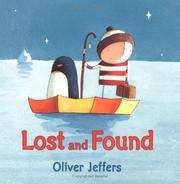
Lost and Found
Oliver Jeffers
Link edition: ISBN 9780007549238 · board book · HarperCollins · Jul 04, 2014 · Edition record
- Cover pending
The Rabbit Listened
Cori Doerrfeld
Link edition: ISBN 9780735229358 · Hardcover · Dial Books for Young Readers · 2018 · Edition record
A Friend for Henry
Jenn Bailey · Mika Song
Link edition: ISBN 9781452167916 · hardcover · Chronicle Books, Chronicle Books LLC · Feb 26, 2019 · Edition record
- Cover pending
The Kindness Club
Kate Bullen-Casanova; illustrated by Dave Petzold
2022 · Bright Light · ISBN 9781761210440
Group play provides a setting for everyday kindness and for challenging assumptions about how children should play.
Edition and cover detailsLink edition: ISBN 9781761210440 · Hardie Grant Books · 2023 · Edition record
 Cover pending
Cover pendingSomething, Someday
Amanda Gorman; illustrated by Christian Robinson
2023 · Viking Books for Young Readers · ISBN 9780593203255
A small act of care becomes a shared effort to improve the neighbourhood.
Edition and cover detailsLink edition: ISBN 9780593203255 · Penguin Young Readers Group · 2023 · Edition record
Picturebooks that invite philosophical questions
Ask which questions the books leave open and how the pictures affect possible answers.

The Big Question
Wolf Erlbruch

The Red Tree
Shaun Tan
- Cover pending
What Do You Do with an Idea?
Kobi Yamada · Mae Besom
Link edition: ISBN 9781938298073 · Hardcover · Compendium Inc., Compendium Kids · February 1, 2014 · Edition record

A Stone Sat Still
Brendan Wenzel
Link edition: ISBN 9781452173368 · Chronicle Books LLC · 2019 · Edition record
Art and visual storytelling
Use the books to compare visual rhythm, scale and framing. The historical cover shows how book design can frame a story.

The Dot
Peter H. Reynolds

The Shape Game
Anthony Browne

Maybe Something Beautiful: How Art Transformed a Neighborhood
F. Isabel Campoy and Theresa Howell · Rafael López
Link edition: ISBN 9780544357693 · 2016 · Edition record
- Cover pending
Yayoi Kusama Covered Everything in Dots and Wasn’t Sorry
Fausto Gilberti
2020 · Phaidon · ISBN 9781838660802
A picturebook biography that uses recurring dots to echo Kusama’s art.
Edition and cover detailsLink edition: ISBN 9781838660802 · Phaidon Press Limited · 2020 · Edition record

Challenging picturebooks
Discuss what each book leaves unresolved. Preview themes of loss, danger or exclusion before using these books with children.
- Cover pending
Fox
Margaret Wild · Ron Brooks
- Cover pending
Varmints
Helen Ward · Marc Craste

The Island
Armin Greder
Link edition: ISBN 9781741752663 · Hardcover · Allen & Unwin · April 1, 2008 · Edition record
- Cover pending
Small in the City
Sydney Smith
Link edition: ISBN 9781406392982 · paperback · WALKER BOOKS · Edition record
The Red Tree
Shaun Tan
Trace how recurring visual details give shape to feelings the narrator struggles to name.

The Rabbits
John Marsden · Shaun Tan
Discuss how the narration and illustrations frame colonisation and dispossession.

The Dam
David Almond · Levi Pinfold
Ask what music and memory can preserve as a valley is flooded.
Link edition: ISBN 9781406386035 · Walker Books, Limited, Walker Studio · 2019 · Edition record

The Wall: Growing Up Behind the Iron Curtain
Peter Sís
Compare how a personal story and historical details help readers piece together life under censorship.
Link edition: ISBN 9780374347017 · Farrar, Straus and Giroux · 2007 · Edition record
Duck, Death and the Tulip
Wolf Erlbruch
Consider how gesture and sparse dialogue shape a conversation about mortality.
Link edition: ISBN 9781877467172 · Gecko Press · 2009 · Edition record
The Journey
Francesca Sanna
Notice how scale and visual metaphor communicate the uncertainty of forced migration.
 Cover pending
Cover pendingThe Day War Came
Nicola Davies · Rebecca Cobb
Follow the image of the chair as it moves from a sign of exclusion to an invitation.
Link edition: ISBN 9781406382938 · paperback · Walker Books · Jun 06, 2019 · Edition record
- Cover pending
The Inheritance
Armin Greder
Ask what the sparse text leaves the reader to infer about power and responsibility.
Metafictional picturebooks
These books draw attention to how stories are told. Look for characters who speak to the reader, books within books and pages that become part of the story.

The Three Pigs
David Wiesner
Characters step outside their printed story and move between different narrative worlds.
Link edition: ISBN 9781849394055 · Andersen Press · 2012 · Edition record
The Stinky Cheese Man and Other Fairly Stupid Tales
Jon Scieszka · Lane Smith
The narrator and characters disrupt familiar fairy tales and the order of the book itself.
- Cover pending
We Are in a Book!
Mo Willems
Elephant and Piggie discover they are being read and try to influence what the reader says.
 Cover pending
Cover pendingThe Monster at the End of This Book
Jon Stone · Michael Smollin
Grover addresses the reader and tries to stop the page turns that move his story forward.
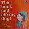
This Book Just Ate My Dog!
Richard Byrne
The gutter swallows characters and the reader is asked to intervene.

Chloe and the Lion
Mac Barnett · Adam Rex
The author and illustrator appear as characters and disagree about how to tell the story.

Open This Little Book
Jesse Klausmeier · Suzy Lee
Nested books let readers follow characters who are also reading stories.
 Cover pending
Cover pendingA Perfectly Messed-Up Story
Patrick McDonnell
Marks on the page interrupt the story and the main character reacts to them.
Link edition: ISBN 9780316222587 · 2014 · Edition record
 Cover pending
Cover pendingThe Book With No Pictures
B. J. Novak
The printed text turns the rules of reading aloud into part of the joke.
Link edition: ISBN 9780803741713 · Hardcover · Dial, 1St Edition edition, Dial Books, Rocky Pond Books, Dial Books for Young Readers, an imprint of Penguin Group (USA) LLC · September 30, 2014 · Edition record

The Red Book
Barbara Lehman
A book found inside this wordless story opens a connection between two readers.
Link edition: ISBN 9780618428588 · Hardcover · Houghton Mifflin Co., Houghton Mifflin · 2004 · Edition record
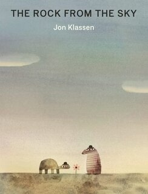
Cover pendingThe Rock from the Sky
Jon Klassen
2021 · Candlewick Press · ISBN 9781536215625
Spare dialogue, delayed action and what the reader sees ahead of the characters create comic suspense.
Edition and cover details
Rhyming picturebooks and read-alouds
Start with Julia Donaldson and listen for refrains, changes in pace and rhyme that invites children to join in.
 Cover pending
Cover pendingThe Gruffalo
Julia Donaldson · illustrated by Axel Scheffler
2016 · Macmillan Children’s Books · ISBN 9781509804757
A quick-thinking mouse uses an invented creature to outwit predators. Invite listeners to join in the repeating encounters.
Link edition: ISBN 9781509804757 · paperback · Pan MacMillan, imusti · Apr 21, 2016 · Edition record
 Cover pending
Cover pendingRoom on the Broom
Julia Donaldson · illustrated by Axel Scheffler
2017 · Macmillan Children’s Books · ISBN 9781509830435
The witch’s broom grows crowded as she makes room for more passengers. Repeating exchanges build anticipation and give listeners a part.
Link edition: ISBN 9781509830435 · Pan Macmillan · 2017 · Edition record
 Cover pending
Cover pendingThe Snail and the Whale
Julia Donaldson · illustrated by Axel Scheffler
2023 · Macmillan Children’s Books · ISBN 9781509845293
A small snail travels with a whale and finds a way to help when the whale is stranded. Listen to how the verse shifts in pace across the journey.
Link edition: ISBN 9781509845293 · Pan Macmillan · 2023 · Edition record
 Cover pending
Cover pendingThe Smartest Giant in Town
Julia Donaldson · illustrated by Axel Scheffler
2016 · Macmillan Children’s Books · ISBN 9781509812530
A giant gives away pieces of his new outfit. The accumulating rhymes make each act of generosity part of a pattern.
Link edition: ISBN 9781509812530 · Pan Macmillan · 2016 · Edition record
 Cover pending
Cover pendingWhat the Ladybird Heard
Julia Donaldson · illustrated by Lydia Monks
2025 · Macmillan Children’s Books · ISBN 9781035049141
A quiet ladybird leads a noisy farmyard plan. Try reading the animal sounds aloud and tracing the route in the illustrations.
Link edition: ISBN 9781035049141 · Pan Macmillan · 2025 · Edition record
- Cover pending
Stick Man
Julia Donaldson · illustrated by Axel Scheffler
2016 · Alison Green Books · ISBN 9781407170718
Mistaken for all sorts of objects, Stick Man keeps insisting on who he is. His recurring protest becomes a refrain.
Link edition: ISBN 9781407170718 · Scholastic · July 7, 2016 · Edition record
- Cover pending
The Smeds and the Smoos
Julia Donaldson · illustrated by Axel Scheffler
2019 · Alison Green Books · ISBN 9781407188898
Two young aliens fall in love despite their families’ feud. The rhyme makes the invented names and words easy to join in with.
Link edition: ISBN 9781407188898 · Alison Green Books · Sep 05, 2019 · Edition record
Shared reading and book talk
Books for making up stories together and for thinking about how to lead conversations about reading.
 Cover pending
Cover pendingYou Choose
Pippa Goodhart · illustrated by Nick Sharratt
2023 · Puffin · paperback picturebook · ISBN 9780141379319
For language learning and storytelling: invite a child to choose a setting and characters, then build a story together. Accept spoken, signed or pointed responses.
Link edition: ISBN 9780141379319 · Penguin Uk · Edition record
- Cover pending
Tell Me (Children, Reading & Talk) with The Reading Environment
Aidan Chambers
Thimble Press · revised combined volume (2011), 200 pages · ISBN 9780903355544
For teachers and reading groups: a starting point for thinking about book talk and the conditions that help children enjoy reading. This is the combined volume, rather than the separate 1993 Tell Me edition.
Link edition: ISBN 9780903355544 · Edition record
Wordless picturebooks
Try retelling the same sequence twice and compare how different details change the reading.
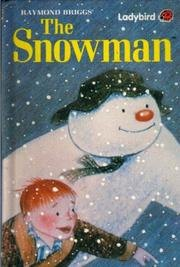
The Snowman
Raymond Briggs
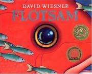
Flotsam
David Wiesner
Link edition: ISBN 9781849394499 · paperback · Andersen Press Ltd · Aug 24, 2001 · Edition record
- Cover pending
Pool
JiHyeon Lee
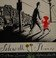
Sidewalk Flowers
JonArno Lawson · Sydney Smith
- Cover pending
Journey
Aaron Becker
· Candlewick Press · ISBN 9780763660536
A red crayon lets a girl draw her way out of her room and into a fantasy world. Track how colour carries the narrative.
Link edition: ISBN 9780763660536 · Candlewick Press · 2013 · Edition record
- Cover pending
Quest
Aaron Becker
· Candlewick Press · ISBN 9780763665951
Two children work out how to rescue a king using a map and coloured chalk. The sequel rewards careful attention to recurring visual clues.
 Cover pending
Cover pendingWave
Suzy Lee
· Chronicle Books · ISBN 9780811859240
A girl’s encounter with the sea unfolds through gesture, colour and the space between the facing pages.
Link edition: ISBN 9780811859240 · Hardcover · Chronicle Books · April 16, 2008 · Edition record


Emotions and feelings
Picturebooks about naming emotions, sitting with them and listening to other people. See also Death, grief and remembrance for books about bereavement.

In My Heart: A Book of Feelings
Jo Witek · Christine Roussey
2014 · Abrams Appleseed · ISBN 9781419713101
A die-cut heart runs through the book as each spread gives a different feeling its own shape and texture.
Link edition: ISBN 9781419713101 · Abrams · 2014 · Edition record
Grumpy Monkey
Suzanne Lang · Max Lang
2018 · Random House Studio · ISBN 9780553537864
Jim’s friends keep trying to cheer him up. The story makes space for having a difficult day without needing to explain it.

The Color Monster: A Story About Emotions
Anna Llenas
2018 · Little, Brown Books for Young Readers · ISBN 9780316450010
Collage and colour give young readers a starting point for naming feelings, including ones that are hard to separate.
Link edition: ISBN 9780316450010 · hardcover · Little, Brown Books for Young Readers · 2018 · Edition record
Home and belonging
Books about the places, people and routines that make somewhere feel like home. For related titles, see Migration, refuge and belonging and Jeannie Baker.
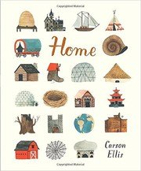
Home
Carson Ellis
2015 · Candlewick Press · ISBN 9780763665296
Real and imagined dwellings share the page, inviting readers to look for what connects very different places people call home.

A House That Once Was
Julie Fogliano · Lane Smith
2018 · Roaring Brook Press · ISBN 9781626723146
Two children piece together possible lives from what remains in an abandoned house. Look at how the pictures distinguish what the children see from what they imagine.

Home in the Woods
Eliza Wheeler
2019 · New York: Nancy Paulsen Books · ISBN 9780399162909
After a father’s death during the Great Depression, a family turns a woodland shack into a home. The changing seasons mark the slow work of making a life there.
Homelessness and housing insecurity
These books look at temporary shelters, insecure housing and the experience of being overlooked. Preview them before sharing with children whose own housing arrangements may be uncertain.
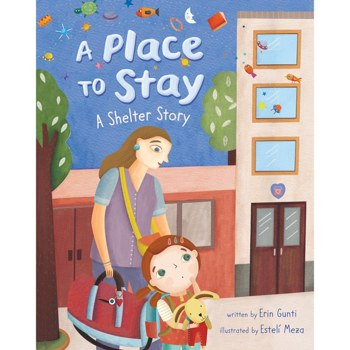
A Place to Stay: A Shelter Story
Erin Gunti · Estelí Meza
2019 · Barefoot Books · ISBN 9781782858256
A girl and her mother use imagination to make a women’s shelter feel less unfamiliar. The back matter discusses reasons people may need temporary shelter.
Link edition: ISBN 9781782858256 · Barefoot Books, Limited · 2019 · Edition record

Still a Family: A Story about Homelessness
Brenda Reeves Sturgis · Jo-Shin Lee
2017 · Albert Whitman · ISBN 9780807577073
A girl and her parents keep their family routines going while living in different shelters. She misses her own room and describes the everyday practicalities of shelter life.

The Can Man
Laura E. Williams · Craig Orback
2010 · Lee & Low Books · ISBN 9781600602665
When Tim collects cans to buy a skateboard, he begins to understand why his neighbour collects them too. Useful for discussing what Tim learns and whose perspective the story follows.

The Invisible
Tom Percival
2021 · Simon & Schuster UK · ISBN 9781471191305
After her family moves because they cannot afford to stay, Isabel feels overlooked and notices others in the same position. The illustrations use visibility to explore poverty and belonging.
Link edition: ISBN 9781471191305 · Simon & Schuster, Limited · 2021 · Edition record
Bodies, consent and growing up
For books that centre gender identity, sexuality and families, see Gender and sexuality.

Bodies Are Cool
Tyler Feder
2021 · Puffin · ISBN 9780241519936
An illustrated celebration of varied body shapes, skin tones and ways of moving. For preschool and early primary read-alouds.
Link edition: ISBN 9780241519936 · paperback · Edition record
- Cover pending
The Bare Naked Book
Kathy Stinson · Melissa Cho
2021 · Revised edition · Annick Press
Names body parts using everyday settings and diverse bodies. Includes straightforward illustrations of nudity. For preschool and early primary shared reading.
- Cover pending
Yes! No!: A First Conversation About Consent
Megan Madison and Jessica Ralli · Isabel Roxas
2022 · Rise x Penguin Workshop
A shared-reading prompt about permission and how to respond when someone says no. For preschool and early primary.
Link edition: ISBN 9780593521885 · hardcover · Rise x Penguin Workshop · Aug 16, 2022 · Edition record
- Cover pending
My Body! What I Say Goes!
Jayneen Sanders
Educate2Empower Publishing · 2nd ed.
A body-safety discussion book about personal boundaries and asking a trusted adult for help. For adult-guided early primary reading.
Link edition: ISBN 9781925089264 · paperback · Educate2Empower Publishing, Educate to Empower Publishing · Jul 01, 2016 · Edition record
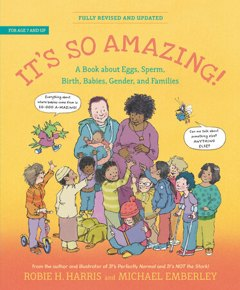
It’s So Amazing!: A Book about Eggs, Sperm, Birth, Babies, Gender, and Families
Robie H. Harris · Michael Emberley
2024 · Revised edition · Candlewick Press · ISBN 9781536207231
Illustrated nonfiction for ages 7 and up. It covers anatomy, reproduction, gender and different ways families are formed, with diagrams and cartoons.
Picturebooks in languages other than English
Explore picturebooks written in languages other than English and compare editions in English where listed.
 Cover pending
Cover pendingElefantmannen
Mariangela Di Fiore · Hilde Hodnefjeld
Norwegian original · 2013 · Cappelen Damm
A personal favourite. English translation: Elephant Man
- Cover pending
El libro negro de los colores
Menena Cottin · Rosana Faría
Spanish original
Compare the Simplified Chinese, French, Turkish and Italian editions of The Black Book of Colors.
 Cover pending
Cover pendingUn grand jour de rien
Beatrice Alemagna
French original · 2016 · Albin Michel Jeunesse
On a Magical Do-Nothing Day
- Cover pending
- Cover pending
ぐりとぐら
Rieko Nakagawa · Yuriko Yamawaki
Japanese original · Fukuinkan Shoten
Guri and Gura
- Cover pending

Les chaises
Louise-Marie Cumont
Wordless · Nantes · Éditions MeMo · 2009 · ISBN 9782352890416
Fabric shapes make a chair into a stage. Look at how a change in pose can alter the relationship between figures from one spread to the next.
Edition and cover details Cover pending
Cover pendingO Meu Avô
Catarina Sobral
Portuguese · Lisboa · Orfeu Negro · First published 2014 · ISBN 9789898327321 (publisher’s listed edition)
A retired watchmaker and a busy doctor live by different rhythms. Look for references to painting and film as their routines intersect.
Edition and cover details Cover pending
Cover pendingA Guerra
José Jorge Letria (text) · André Letria (illustration)
Portuguese · Lisboa · Pato Lógico · 2018 · ISBN 9789899965881
Restrained imagery gives war an unsettling presence. For older readers or supported discussion of war and its effects.
Edition and cover details Cover pending
Cover pendingComo criar uma biblioteca
Inês Fonseca Santos (text) · André Letria (illustration)
Portuguese · Pato Lógico · 2024 · ISBN 9789895354689
A library starts with books one wants to keep close. Compare the tall stack on the cover with the small reader below and consider what that difference in scale suggests.
- Cover pending
O mundo num segundo
Isabel Minhós Martins (text) · Bernardo P. Carvalho (illustration)
Portuguese · Planeta Tangerina · 2013 edition · ISBN 9789898145550
Comic-like views of different places unfold during the same second. Follow what changes across each page turn and what stays simultaneous.
Edition and cover details  Cover pending
Cover pendingCoração de mãe
Isabel Minhós Martins (text) · Bernardo P. Carvalho (illustration)
Portuguese · Planeta Tangerina · First published 2008 · ISBN 9789898145048
An almost invisible thread makes the bond between mother and child visible. Follow how that line links moments of joy, worry and separation.
Edition and cover details- Cover pending
Com o tempo
Isabel Minhós Martins (text) · Madalena Matoso (illustration)
Portuguese · Planeta Tangerina · 2014 · ISBN 9789898145604
Pair the pictured changes across spreads and ask which could be noticed in a day and which need years.
Edition and cover details - Cover pending
Fantasmas, bananas e avestruzes
Catarina Sobral
Portuguese · Assembleia da República · 2023 · ISBN 9789725568293
Playful pictured examples give readers a way into the unseen rules that shape daily life. Compare the ghosts with the everyday objects and ask why they share a page.
- Cover pending
Η Σελήνη στο Παρίσι
Αρετή Κατσαντώνη (text) · Χρύσω Χαραλάμπους (illustration)
Greek · Εκδόσεις Φουρφούρι · 2024 · ISBN 9786185819163
The illuminated Eiffel Tower anchors a night-time palette. Look for how changes in scale and colour guide the reader through Paris.
Edition and cover details - Cover pending
Η βάρκα που τη λένε μνήμη: Η μνήμη ως βάλσαμο της ψυχής και θεμέλιο της κοινωνίας
Βαγγέλης Ηλιόπουλος (text) · Ντανιέλα Σταματιάδη (illustration)
Greek · Αθήνα · Νομική Βιβλιοθήκη · 2017 · ISBN 9789605626907
A boat gives remembering a physical shape. Look at how the domestic objects and the watery setting connect an individual memory to a wider community.
Edition and cover details - Cover pending
Plan de rescate
Antía Yáñez; illustrated by Xiana Teimoy
Spanish · Anaya Infantil y Juvenil · ISBN 9788414334607
An illustrated children’s novel about a group of friends who put a rescue plan into action.
Edition and cover details - Cover pending
L’Île de Victor
Marie Sellier; illustrated by Catherine Louis
French · 2020 · Éditions LEP · ISBN 9782606017194
Study how the sparse cover and use of negative space set the tone before the story begins.

Mi lazarilla, mi capitán
Gonzalo Moure; illustrated by Maria Girón
Spanish · 2020 · Kalandraka · ISBN 9788413430317
A father and daughter navigate the city through sound and imagination. Traditional Chinese edition: 即使看不見，我們還是牽著手穩穩走 (ISBN 9789869990585).
Edition and cover details Traditional Chinese edition
¡Qué suerte tengo!
Lawrence Schimel; illustrated by Juan Camilo Mayorga
Spanish
A boy reflects on everyday moments with his brother José and what makes their relationship special.
Edition and cover details
Yağmur Adam ve En Güzel Dans
Özge Bahar Sunar
Turkish · 2019 · Redhouse Kidz · İstanbul · ISBN 9786052079539
A Turkish picturebook whose illustrations use movement and weather to complement the text.
Edition and cover details- Cover pending
象脚鼓
殷健灵
Chinese · 天天出版社 · ISBN 9787501616039
An illustrated children’s story in the 2021 IBBY disability selection. The elephant-foot drum is central to the protagonist’s story.
Edition and cover details - Cover pending
Μελάκ, μόνος
Αργυρώ Πιπίνη · Αχιλλέας Ραζής
Greek · 2016 · Καλειδοσκόπιο · Αθήνα · ISBN 9789604711215
The illustrations place a child travelling alone in a landscape of displacement.
Edition and cover details  Cover pending
Cover pending一本关于颜色的黑书
Menena Cottin · illustrated by Rosana Faría
Simplified Chinese · 2010 · 接力出版社 · ISBN 9787544807616
The Simplified Chinese edition of The Black Book of Colors.
- Cover pending
Le livre noir des couleurs
Menena Cottin · illustrated by Rosana Faría · translated and adapted by Alain Serres
French · 2007 · Rue du monde · ISBN 9782355040023
The French edition of The Black Book of Colors, with raised images and Braille.
- Cover pending
Renklerin Kara Kitabı
Menena Cottin · illustrated by Rosana Faría
Turkish · 2016 · EDAM · ISBN 9786051690964
The Turkish edition of The Black Book of Colors. It evokes colours through tastes, textures and sounds.
- Cover pending
Il libro nero dei colori
Menena Cottin · illustrated by Rosana Faría · translated by Fabian Negrin
Italian · Gallucci · ISBN 9791222101804
The Italian edition of The Black Book of Colors, with printed text and Braille.
- Cover pending
Cierra los ojos
Victoria Pérez Escrivá · illustrated by Claudia Ranucci
Spanish · 2020 edition · ISBN 9788416817764
Two brothers describe the same world in different ways. One brother is blind, and their exchanges invite readers to notice what sound, smell and touch can tell them.
- Cover pending
Enciklopedija čudovišta
Stanislav Marijanović
Croatian · 2008 · Sipar · Zagreb · ISBN 9789536415564
An illustrated encyclopedia of imaginary monsters. See more of his work on the Stanislav Marijanović profile.
Some books were discovered through Janet Evans’s picturebook recommendations.
Selected covers from publishers. Additional edition covers supplied by Open Library where available.
Explore the Reading Tools & Companions page.
↑A wider English-speaking world
More voices from Australia, Canada, India, South Africa, Aotearoa New Zealand, Nigeria and Ghana. These selections include local and Indigenous creators, family life, humour, histories, English editions and wordless books.
Purchase options are included only where a direct retailer page and its ISBN have been checked. Publisher and reference records remain available for every selection.
Australia: Country, place and humour
Australian creators and settings, including First Nations perspectives.
My Place
Nadia Wheatley · Donna Rawlins
Walker Books · ISBN 9781921150654
Children narrate the same Sydney neighbourhood at different moments in its history. Compare recurring maps, family stories and relationships with Country.
Checked edition: ISBN 9781921150654
Welcome to Country
Aunty Joy Murphy · Lisa Kennedy
Walker Books · ISBN 9781922244871
A Wurundjeri welcome introduces relationships with Country and community. Read the words alongside Lisa Kennedy’s images and attend to the specific community represented.
Somebody’s Land
Adam Goodes and Ellie Laing · David Hardy
Allen & Unwin · ISBN 9781760526726
Introduces First Nations presence and relationships to land. Discuss how the book challenges the idea of an empty country.
Diary of a Wombat
Jackie French · Bruce Whatley
HarperCollins Children’s Books · ISBN 9780007212071
A wombat’s brief diary entries gain comic meanings from the pictures. Useful for sequencing, everyday verbs and the gap between words and images.
Canada: language, family and Indigenous perspectives
Includes Indigenous voices, Québécois storytelling and a Canadian astronaut’s childhood.
Shi-shi-etko
Nicola I. Campbell · Kim LaFave
Groundwood Books · ISBN 9780888996596
A child gathers memories of home before entering residential school. Read with historical context and space for questions about language, family and separation.
Checked edition: ISBN 9780888996596
The Water Walker
Joanne Robertson
Second Story Press · ISBN 9781772600384
Tells the story of Josephine Mandamin’s water walks. Trace the relationship between journey, responsibility and Anishinaabe knowledge.
The Hockey Sweater
Roch Carrier · Sheldon Cohen · translated by Sheila Fischman
Tundra Books · ISBN 9780887761744
A Québécois child’s hockey jersey becomes a story of belonging, language and community. Compare the English translation with the expressive illustrations.
Checked edition: ISBN 9780887761744
The Darkest Dark
Chris Hadfield with Kate Fillion · The Fan Brothers
Macmillan Children’s Books · ISBN 9781509824090
A childhood fear of darkness meets a fascination with space. Compare Chris Hadfield’s recollections with the Fan Brothers’ imaginative illustrations.
Checked edition: ISBN 9781529013610 · Updated 2019 paperback edition
India: images, language and questions
Indian writers, artists and publishers, including Gond art, read-aloud verse and wordless storytelling.
The Night Life of Trees
Bhajju Shyam · Durga Bai · Ram Singh Urveti
Tara Books · ISBN 9788186211922
Three Gond artists connect trees with stories and living worlds. Attend to the images as narratives and to the screen-printed book’s material form.
Checked edition: ISBN 9788186211922
Tiger on a Tree
Anushka Ravishankar · Pulak Biswas
Tara Books · ISBN 9789383145065
Rhyme, repetition and images follow a tiger’s unexpected visit to a village. Read aloud and compare the villagers’ proposed solutions.
Checked edition: ISBN 9789383145065
Ammachi’s Glasses
Priya Kuriyan
Tulika Books · ISBN 9789350469088
A wordless comedy follows a grandmother who cannot find her glasses. Infer the mishaps from the pictures and tell the story in different languages.
The Why-Why Girl
Mahasweta Devi · Kanyika Kini
Tulika Books · ISBN 9788181460189
A questioning protagonist challenges the limits placed on her learning. Discuss who gets to ask questions and attend school.
Checked edition: ISBN 9788181460189
South Africa: identity, hopes and history
South African voices and settings, with books about everyday experience as well as political history.
Wanda
Sihle Nontshokweni and Mathabo Tlali · Chantelle and Burgen Thorne
Otter-Barry Books · ISBN 9781913074470
Hair, teasing and family stories open conversations about identity and confidence. Compare Wanda’s own words with the ways other characters describe her.
Checked edition: ISBN 9781913074470
The Herd Boy
Niki Daly
Eerdmans Books for Young Readers · ISBN 9780802854179
Follows a young herder’s responsibilities and hopes. Look at how landscape, dialogue and illustration establish the Eastern Cape setting.
Grandad Mandela
Zindzi, Zazi and Ziwelene Mandela · Sean Qualls
Frances Lincoln Children’s Books · ISBN 9781786031365
Members of the Mandela family answer children’s questions about apartheid, activism and freedom. Discuss how family recollection contributes to an account of history.
Aotearoa New Zealand: rhyme and family voices
Stories to share aloud and discuss through sound, pictures and family relationships.
Hairy Maclary from Donaldson’s Dairy
Lynley Dodd
Puffin · ISBN 9780140505313
Cumulative rhyme follows a neighbourhood dog and his companions. Explore sound patterns, recurring names and the final change in mood.
Checked edition: ISBN 9780670913503 · Board book edition
The Bomb
Sacha Cotter · Josh Morgan
Huia Publishers · ISBN 9781775503507
A boy learns to make his own dive-bomb with his grandmother’s help. Discuss confidence, family voices and the meaning of a successful attempt.
Checked edition: ISBN 9781775503507
Nigeria: stories by Atinuke
Picturebooks by Nigerian storyteller Atinuke, with joyful family stories and West African settings.
Anna Hibiscus’ Song
Atinuke · Lauren Tobia
Walker Books · ISBN 9781406338416
Nigerian storyteller Atinuke follows a child looking for a way to express happiness. Compare the family members’ suggestions and the rhythm of the telling.
Checked edition: ISBN 9781406338416
Catch That Chicken!
Atinuke · Angela Brooksbank
Walker Books · ISBN 9781406394504
Lami needs a new way to catch chickens after injuring her ankle. Retell the sequence and explore how the pictures convey speed and cleverness.
Checked edition: ISBN 9781406394504
Ghana: stories by Portia Dery
A Ghanaian author’s picturebook opens conversations about memory, responsibility and family life.
Gogo’s List
Portia Dery · Toby Newsome
Jacana Media · ISBN 9781431428502
Ghanaian author Portia Dery pairs family errands with the comedy of a forgotten list. Try retelling events from different characters’ perspectives.